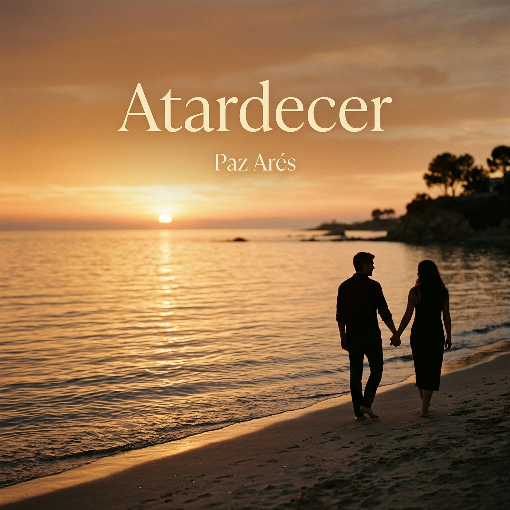
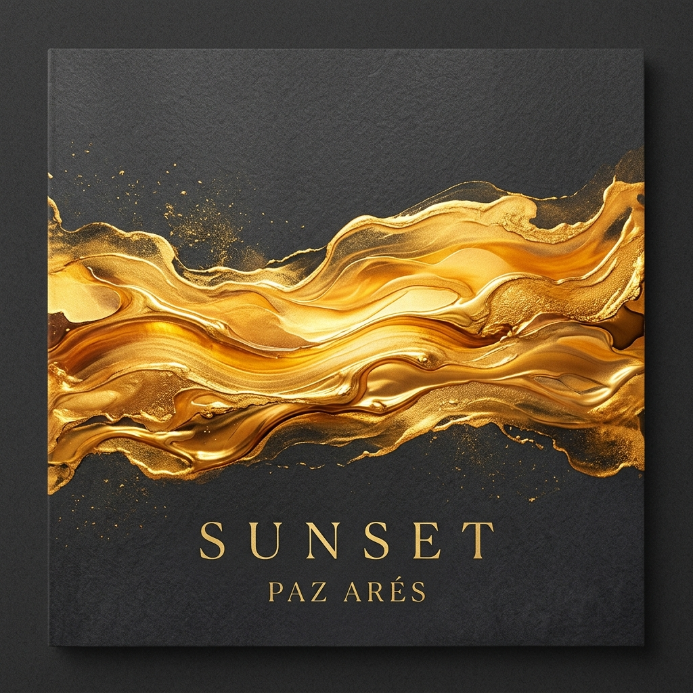
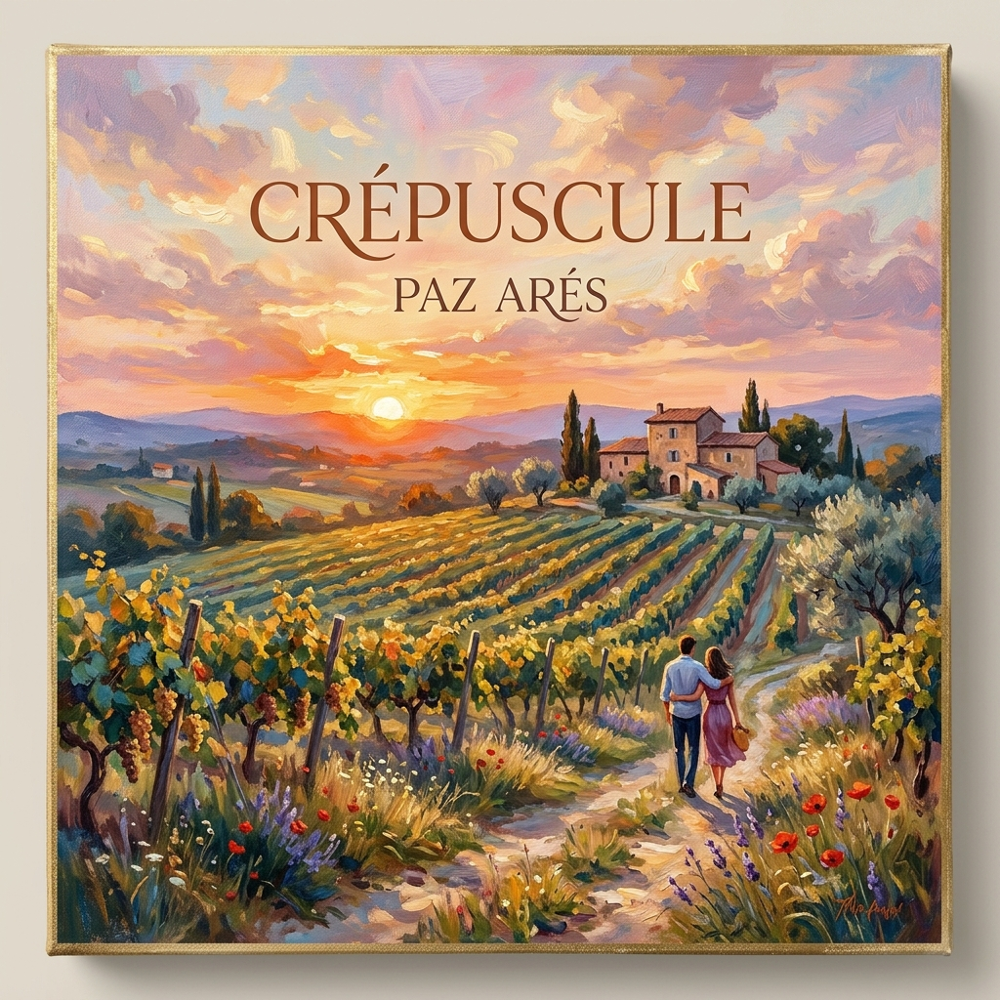
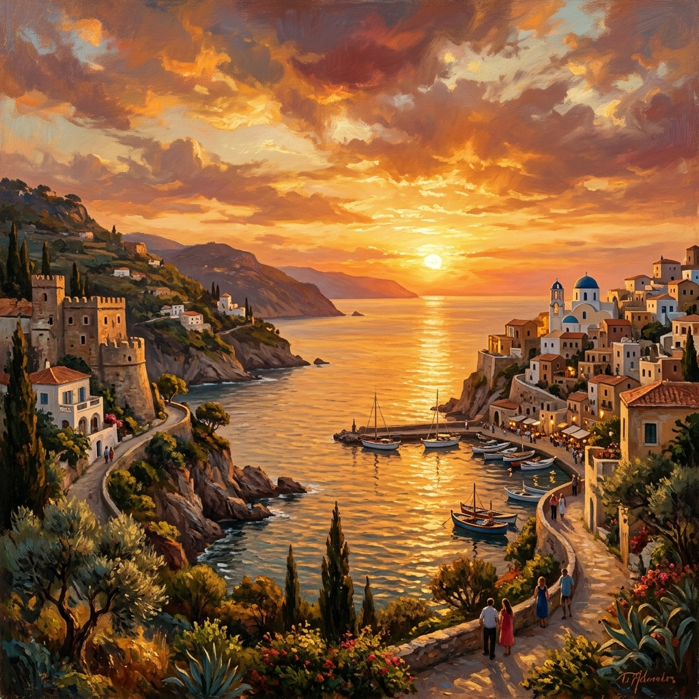

Atardecer Sunset Tramonto Crépuscule Entardecer Abendrot 黄昏 غروب الشمس Закат 夕暮れ Закат
No te pedía nada,
tan sólo verte, besarte, amarte.
¿Qué temor del alma rompió tal grandeza?
¿Qué notas componen esta vida extraña?
tan sólo verte, besarte, amarte.
¿Qué temor del alma rompió tal grandeza?
¿Qué notas componen esta vida extraña?
Estar con tu ternura,
deseos que fueron luz y amargura.
Sinfonía inacabada, sinfonía del alma,
encanto abrumador, vida del universo.
deseos que fueron luz y amargura.
Sinfonía inacabada, sinfonía del alma,
encanto abrumador, vida del universo.
En este atardecer de oro,
nubes calientes,
doy las gracias al Dios existente,
y le hago un ruego grande, muy grande.
nubes calientes,
doy las gracias al Dios existente,
y le hago un ruego grande, muy grande.
En esta vida corta y humana,
quien sueña con amar, sea amada.
quien sueña con amar, sea amada.
I asked for nothing,
only to see you, kiss you, love you.
What fear of the soul broke such greatness?
What notes compose this strange life?
only to see you, kiss you, love you.
What fear of the soul broke such greatness?
What notes compose this strange life?
To be with your tenderness,
desires that were light and bitterness.
Unfinished symphony, symphony of the soul,
overwhelming charm, life of the universe.
desires that were light and bitterness.
Unfinished symphony, symphony of the soul,
overwhelming charm, life of the universe.
In this golden sunset,
warm clouds,
I give thanks to the existing God,
and I make a great plea, a very great one.
warm clouds,
I give thanks to the existing God,
and I make a great plea, a very great one.
In this short and human life,
whoever dreams of loving, let her be loved.
whoever dreams of loving, let her be loved.
Non ti chiedevo nulla,
solo vederti, baciarti, amarti.
Quale timore dell'anima ha infranto tale grandezza?
Quali note compongono questa strana vita?
solo vederti, baciarti, amarti.
Quale timore dell'anima ha infranto tale grandezza?
Quali note compongono questa strana vita?
Stare con la tua tenerezza,
desideri que furono luce e amarezza.
Sinfonia incompiuta, sinfonia dell'anima,
incanto travolgente, vita dell'universo.
desideri que furono luce e amarezza.
Sinfonia incompiuta, sinfonia dell'anima,
incanto travolgente, vita dell'universo.
In questo tramonto d'oro,
nuvole calde,
rendo grazie al Dio esistente,
e Gli rivolgo una preghiera grande, molto grande.
nuvole calde,
rendo grazie al Dio esistente,
e Gli rivolgo una preghiera grande, molto grande.
In questa vita breve e umana,
chi sogna di amare, possa essere amata.
chi sogna di amare, possa essere amata.
Je ne te demandais rien,
seulement te voir, t'embrasser, t'aimer.
Quelle peur de l'âme a brisé une telle grandeur ?
Quelles notes composent cette vie étrange ?
seulement te voir, t'embrasser, t'aimer.
Quelle peur de l'âme a brisé une telle grandeur ?
Quelles notes composent cette vie étrange ?
Être avec ta tendresse,
des désirs qui furent lumière et amertume.
Symphonie inachevée, symphonie de l'âme,
charme accablant, vie de l'univers.
des désirs qui furent lumière et amertume.
Symphonie inachevée, symphonie de l'âme,
charme accablant, vie de l'univers.
Dans ce crépuscule d'or,
nuages chauds,
je rends grâce au Dieu existant,
et je lui adresse une prière grande, très grande.
nuages chauds,
je rends grâce au Dieu existant,
et je lui adresse une prière grande, très grande.
Dans cette vie courte et humaine,
que celle qui rêve d'aimer, soit aimée.
que celle qui rêve d'aimer, soit aimée.
Não te pedia nada,
apenas ver-te, beijar-te, amar-te.
Que temor da alma quebrou tamanha grandeza?
apenas ver-te, beijar-te, amar-te.
Que temor da alma quebrou tamanha grandeza?
Estar com a tua ternura,
desejos que foram luz e amargura.
Sinfonia inacabada, sinfonia da alma.
desejos que foram luz e amargura.
Sinfonia inacabada, sinfonia da alma.
Neste entardecer de ouro,
nuvens quentes,
dou graças ao Deus existente.
nuvens quentes,
dou graças ao Deus existente.
Nesta vida curta e humana,
quem sonha em amar, seja amada.
quem sonha em amar, seja amada.
Ich bat dich um nichts,
nur darum, dich zu sehen, dich zu küssen, dich zu lieben.
nur darum, dich zu sehen, dich zu küssen, dich zu lieben.
Mit deiner Zärtlichkeit zu sein,
Wünsche, die Licht und Bitterkeit waren.
Wünsche, die Licht und Bitterkeit waren.
In diesem goldenen Sonnenuntergang,
warme Wolken,
danke ich dem existierenden Gott.
warme Wolken,
danke ich dem existierenden Gott.
En esta vida corta y humana,
wer davon träumt zu lieben, soll geliebt werden.
wer davon träumt zu lieben, soll geliebt werden.
我不求你任何回报，
只想见你，吻你，爱你。
灵魂的何种恐惧打破了如此的伟大？
什么样的音符组成了这奇异的人生？
只想见你，吻你，爱你。
灵魂的何种恐惧打破了如此的伟大？
什么样的音符组成了这奇异的人生？
在你的温柔里，
曾是光明与苦涩的渴望。
未完成的交响曲，灵魂的交响曲，
压倒性的魅力，宇宙的生命。
曾是光明与苦涩的渴望。
未完成的交响曲，灵魂的交响曲，
压倒性的魅力，宇宙的生命。
在这金色的黄昏，
火热的云彩，
我感谢现存的上帝，
向他发出一个伟大的恳求，非常伟大。
火热的云彩，
我感谢现存的上帝，
向他发出一个伟大的恳求，非常伟大。
在这短暂的人类生命中，
愿梦想爱的人，能被爱。
愿梦想爱的人，能被爱。
لم أسألك شيئاً،
فقط أن أراك، أن أقبلك، أن أحبك。
أي خوف في الروح كسر هذه العظمة؟
أي نوتات تشكل هذه الحياة الغريبة؟
فقط أن أراك، أن أقبلك، أن أحبك。
أي خوف في الروح كسر هذه العظمة؟
أي نوتات تشكل هذه الحياة الغريبة؟
أن أكون مع حنانك،
رغبات كانت نوراً ومرارة。
سيمفونية غير مكتملة، سيمفونية الروح،
سحر طاغٍ، حياة الكون.
رغبات كانت نوراً ومرارة。
سيمفونية غير مكتملة، سيمفونية الروح،
سحر طاغٍ، حياة الكون.
في هذا الغروب الذهبي،
سحب دافئة،
أشكر الله الموجود،
وأتوسل إليه توسلاً كبيراً، كبيراً جداً.
سحب دافئة،
أشكر الله الموجود،
وأتوسل إليه توسلاً كبيراً، كبيراً جداً.
في هذه الحياة القصيرة والبشرية،
من تحلم بأن تُحب، فلتكن محبوبة.
من تحلم بأن تُحب، فلتكن محبوبة.
Я ничего не просила у тебя,
только видеть тебя, целовать тебя, любить тебя.
Какой страх души разрушил такое величие?
Какие ноты составляют эту странную жизнь?
только видеть тебя, целовать тебя, любить тебя.
Какой страх души разрушил такое величие?
Какие ноты составляют эту странную жизнь?
Быть с твоей нежностью,
желания, которые были светом и горечью.
Неоконченная симфония, симфония души,
подавляющее очарование, жизнь вселенной.
желания, которые были светом и горечью.
Неоконченная симфония, симфония души,
подавляющее очарование, жизнь вселенной.
В этом золотом закате,
теплые облака,
я благодарю сущего Бога,
и обращаюсь к Нему с великой просьбой, очень большой.
теплые облака,
я благодарю сущего Бога,
и обращаюсь к Нему с великой просьбой, очень большой.
В этой короткой человеческой жизни,
пусть та, кто мечтает любить, будет любима.
пусть та, кто мечтает любить, будет любима.
私はあなたに何も求めなかった、
ただあなたに会い、口づけし、愛することだけを。
魂のどのような恐れが、これほどまでの偉大さを壊したのか？
どのような音符が、この奇妙な人生を構成しているのか？
ただあなたに会い、口づけし、愛することだけを。
魂のどのような恐れが、これほどまでの偉大さを壊したのか？
どのような音符が、この奇妙な人生を構成しているのか？
あなたの優しさと共に、
光であり苦しみであった願い。
未完成の交響曲、魂の交響曲、
圧倒的な魅力、宇宙の命。
光であり苦しみであった願い。
未完成の交響曲、魂の交響曲、
圧倒的な魅力、宇宙の命。
この黄金の夕暮れ、
暖かい雲、
私は存在する神に感謝し、
その神に大きな、とても大きな願いを捧げる。
暖かい雲、
私は存在する神に感謝し、
その神に大きな、とても大きな願いを捧げる。
この短く人間的な人生において、
愛を夢見る者が、愛されますように。
愛を夢見る者が、愛されますように。
Я нічого не просила у тебе,
тільки бачити тебе, цілувати тебе, любити тебе.
Який страх душі зруйнував таку велич?
Які ноти складають це дивне життя?
тільки бачити тебе, цілувати тебе, любити тебе.
Який страх душі зруйнував таку велич?
Які ноти складають це дивне життя?
Бути з твоєю ніжністю,
бажання, що були світлом і гіркотою.
Незакінчена симфонія, симфонія душі,
приголомшлива чарівність, життя всесвіту.
бажання, що були світлом і гіркотою.
Незакінчена симфонія, симфонія душі,
приголомшлива чарівність, життя всесвіту.
У цьому золотому заході сонця,
теплі хмари,
я дякую існуючому Богу,
і звертаюся до Нього з великим проханням, дуже великим.
теплі хмари,
я дякую існуючому Богу,
і звертаюся до Нього з великим проханням, дуже великим.
У цьому короткому людському житті,
хай та, хто мріє любити, буде коханою.
хай та, хто мріє любити, буде коханою.
Paz Arés Osset
1992
Sinfonía del Alma Symphony of the Soul Sinfonia dell'Anima Symphonie de l'âme Sinfonia da Alma Symphonie der Seele 灵魂交响曲 سيمفونية الروح Симфония души 魂の交響曲 Симфонія душі

Versión Castellano
Spanish Version
Versione in Spagnolo
Version Espagnole
Versão em Espanhol
Spanische Version
西班牙语版本
النسخة الإسبانية
Испанская версия
スペイン語版
Іспанська версія
Atardecer

Versión Inglés
English Version
Versione in Inglese
Version Anglaise
Versão em Inglês
Englische Version
英语版本
النسخة الإنجليزية
Английская версия
英語版
Англійська версія
Sunset

Versión Francés
French Version
Versione in Francese
Version Française
Versão em Francês
Französische Version
法语版本
النسخة الفرنسية
Французская версия
フランス語版
Французька версія
Crépuscule
El diálogo entre el alma y el horizonte.
The dialogue between the soul and the horizon.
Il dialogo tra l'anima e l'orizzonte.
Le dialogue entre l'âme et l'horizon.
O diálogo entre a alma e o horizonte.
Der Dialog zwischen der Seele und dem Horizont.
灵魂与地平线之间的对话。
الحوار بين الروح والأفق.
Диалог между душой и горизонтом.
魂と地平線の間の対話。
Діалог між душею та горизонтом.

Sinfonía inacabada de luz y oro.
Unfinished symphony of light and gold.
Sinfonia incompiuta di luce e oro.
Symphonie inachevée de lumière et d'or.
Sinfonia inacabada de luz e ouro.
Unvollendete Symphonie aus Licht und Gold.
光与金色的未完成交响曲。
سيمفونية غير مكتملة من النور والذهب.
Неоконченная симфония света и золота.
光と金の未完成の交響曲。
Незакінчена симфонія світла і золота.
Inspiración Inspiration Ispirazione Inspiration Inspiração Inspiration 灵感 إلهام Вдохновение インスピレーション Натхнення
Escrito en mil novecientos noventa y dos, "Atardecer" es una sinfonía de sentimientos que captura la transición entre la luz y la sombra, tanto en el cielo como en el alma. Paz Arés Osset nos entrega un diálogo íntimo con lo divino y lo humano, donde el fin del día se convierte en la partitura de un amor que busca su resolución. El poema no solo describe un paisaje físico, sino un estado emocional donde la "sinfonía inacabada" del alma encuentra su refugio en la gratitud. Su verso final es un ruego eterno, una plegaria que resuena en la brevedad de nuestra existencia: el deseo universal de amar y ser amado antes de que el sol se oculte definitivamente.
Written in nineteen ninety-two, "Sunset" is a symphony of feelings that captures the transition between light and shadow, both in the sky and in the soul. Paz Arés Osset gives us an intimate dialogue with the divine and the human, where the end of the day becomes the score of a love seeking its resolution. The poem not only describes a physical landscape, but an emotional state where the "unfinished symphony" of the soul finds its refuge in gratitude. Its final verse is an eternal plea, a prayer that resonates in the brevity of our existence: the universal desire to love and be loved before the sun finally sets.
Scritto nel millenovecentonovantadue, "Tramonto" è una sinfonia di sentimenti che cattura la transizione tra luce e ombra, sia nel cielo che nell'anima. Paz Arés Osset ci regala un dialogo intimo con il divino e l'umano, dove la fine del giorno diventa lo spartito di un amore in cerca di risoluzione. Il poema non descrive solo un paesaggio fisico, ma uno stato emotivo in cui la "sinfonia incompiuta" dell'anima trova rifugio nella gratitudine. Il suo verso finale è una supplica eterna, una preghiera che risuona nella brevità della nostra esistenza: il desiderio universale di amare ed essere amati prima che il sole tramonti per sempre.
Écrit en mil neuf cent quatre-vingt-douze, "Crépuscule" est une symphonie de sentiments qui capture la transition entre l'ombre et la lumière, tant dans le ciel que dans l'âme. Paz Arés Osset nous livre un dialogue intime avec le divin et l'humain, où la fin du jour devient la partition d'un amour en quête de sa résolution. Le poème ne décrit pas seulement un paysage physique, mas un état émotionnel où la « symphonie inachevée » de l'âme trouve son refuge dans la gratitude. Son vers final est une supplique éternelle, une prière qui résonne dans la brièveté de notre existence : le désir universel d'aimer et d'être aimé avant que le soleil ne se couche définitivement.
Escrito em mil novecentos e noventa e dois, "Entardecer" é uma sinfonia de sentimentos que captura a transição entre a luz e a sombra, tanto no céu quanto na alma. Paz Arés Osset nos entrega um diálogo íntimo com o divino e o humano, onde o fim do dia se torna a partitura de um amor que busca sua resolução. O poema não apenas descreve uma paisagem física, mas um estado emocional onde a "sinfonia inacabada" da alma encontra seu refúgio na gratidão. Seu verso final é um rogo eterno, uma prece que ressoa na brevidade de nossa existência: o desejo universal de amar e ser amado antes que o sol se oculte definitivamente.
Geschrieben im Jahr neunzehnhundertzweiundneunzig, ist "Abendrot" eine Sinfonie der Gefühle, die den Übergang zwischen Licht und Schatten sowohl am Himmel als auch in der Seele einfängt. Paz Arés Osset schenkt uns einen intimen Dialog mit dem Göttlichen und Menschlichen, bei dem das Ende des Tages zur Partitur einer Liebe wird, die nach ihrer Erlösung sucht. Das Gedicht beschreibt nicht nur eine physische Landschaft, sondern einen emotionalen Zustand, in dem die "unvollendete Symphonie" der Seele ihre Zuflucht in der Dankbarkeit findet. Sein letzter Vers ist ein ewiges Flehen, ein Gebet, das in der Kürze unserer Existenz nachhallt: der universelle Wunsch, zu lieben und geliebt zu werden, bevor die Sonne endgültig untergeht.
写于一九九二年，《黄昏》是一首情感的交响曲，捕捉了天空与灵魂中光与影的转换。佩斯·阿雷斯·奥塞特为我们呈现了一场与神圣和人性的亲密对话，在这里，一天的结束成为追寻其归宿的爱情的乐谱。这首诗不仅描述了物理上的风景，还描绘了一种情感状态，在这里，灵魂的“未完成交响曲”在感恩中找到了避难所。它的最后一行是永恒的恳求，是在我们短暂存在中回响的祈祷：在太阳最终落下之前，爱与被爱的普遍愿望。
كُتِبَت عام ألف وتسعمائة واثنان وتسعون， "الغروب" هي سيمفونية من المشاعر تلتقط الانتقال بين النور والظل， سواء في السماء أو في الروح。 تقدم لنا باز أريس أوسيت حواراً حميماً مع الإلهي والإنساني， حيث يصبح نهاية اليوم نوتة لحب يبحث عن حله。 القصيدة لا تصف منظراً طبيعياً فحسب， بل تصف حالة عاطفية تجد فيها "السيمفونية غير المكتملة" للروح ملجأها في الامتنان。 بيت القصيدة الأخير هو التماس أبدي， صلاة تتردد في قصر وجودنا： الرغبة العالمية في الحب وأن نُحَب قبل أن تغرب الشمس نهائياً。
Написанная в тысяча девятьсот девяносто втором году, "Закат" - это симфония чувств, которая улавливает переход между светом и тенью как на небе, так и в душе. Пас Арес Оссет дарит нам интимный диалог с божественным и человеческим, где конец дня становится партитурой любви, ищущей своего разрешения. Стихотворение описывает не только физический пейзаж, но и эмоциональное состояние, в котором "неоконченная симфония" души находит свое убежище в благодарности. Его последняя строфа - это вечная мольба, молитва, которая резонирует в краткости нашего существования: всеобщее желание любить и быть любимым до того, как солнце окончательно зайдет.
1992年に書かれた「夕暮れ」は、空と魂の両方で光と影の移り変わりを捉えた感情の交響曲です。パス・アレス・オセットは、神聖なものと人間的なものとの親密な対話を提供してくれます。そこでは、一日の終わりが、その解決を求める愛の楽譜となります。この詩は、物理的な風景だけでなく、魂の「未完成の交響曲」が感謝の中に避難所を見つける感情的な状態も描写しています。その最後の行は永遠の嘆願であり、私たちの存在の短さに響き渡る祈りです：太陽が最終的に沈む前に、愛し愛されたいという普遍的な願い。
Написаний у тисяча дев'ятсот дев'яносто другому році, "Захід сонця" — це симфонія почуттів, що фіксує перехід між світлом і тінню як на небі, так і в душі. Пас Арес Оссет дарує нам інтимний діалог з божественним і людським, де кінець дня стає партитурою кохання, яке шукає свого вирішення. Вірш описує не лише фізичний пейзаж, але й емоційний стан, у якому "незакінчена симфонія" душі знаходить свій прихисток у вдячності. Його остання строфа — це вічне благання, молитва, що резонує у стислості нашого існування: універсальне бажання любити й бути коханим до того, як сонце остаточно зайде.